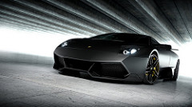
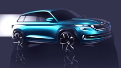

 


With a new name reflecting both its modern design and premium luxury, the 2017 GLS sets countless new standard for full-size 7-passenger SUVs. With three rows of first-class seating and class-leading new safety systems, it pairs comfort with confidence like no other. From cargo carrying to trailer towing, its capacities are as vast as the capabilities imparted by its 4MATIC all-wheel drive, Crosswind Assist and more. When you compare large SUVs, examine the dimensions that matter most: The depth of their engineering. And the strength of their character.
Almost 135 kilograms lighter than the outgoing model, the redesigned 2016 Pilot now comes equipped with a 280-horsepower, 3.5-litre V6 and new six-speed and available nine-speed automatic transmissions. The full-sized SUV is available in front-wheel and all-new all-wheel-drive configurations.Trim levels offered include LX, EX, EX-L, EX-L RES, EX-L Navi and Touring. Honda Sensing — a suite of safety and driver assistive technologies that include collision mitigation braking with forward collision warning, road departure mitigation with lane departure warning, lane-keeping assist and adaptive cruise control — is available on the LX AWD and standard on EX trims and above.For the first time, upper trim levels will have second-row captain’s chairs, providing for easy walk through between the second and third rows, in addition to the standard second-row, three-person, 60/40-split seat for eight-passenger seating capacity on all other trims.
Unveiled at the North American International Auto Show in Detroit, the new 2016 Porsche Cayenne Turbo S is the most powerful SUV to ever come out of Stuttgart, Germany. This iteration of the Cayenne Turbo S is the first vehicle in its class to beat the 8-minute mark around the famed Nürburgring racetrack, stripping the title of the fastest SUV in the world away from Land Rover. Along with this improved performance come added interior amenities, including Alcantara, custom color schemes, and carbon-fiber interior accents. The SUV is powered by a 4.8-liter twin-turbo V-8 engine that can produce 570 hp and 590 ft lbs of torque. Porsche has integrated turbochargers into the engine’s exhaust manifolds, helping the Cayenne accelerate from zero to 60 mph in 3.8 seconds and reach a top speed of 176 mph. The Turbo S is also equipped with ceramic brakes, 21-inch wheels, and torque vectoring.The 2016 Porsche Cayenne Turbo S is expected to hit U.S. Porsche dealerships in April, with a starting price of $158,295.
As the flagship vehicle for Nissan’s expanding range of crossovers and SUVs, the third-generation Murano, introduced last year, sees no significant changes for 2016. A premium interior and advanced technologies were the biggest additions to this model in 2015. Power is provided by a standard 260-horsepower 3.5-litre DOHC V6 connected to an Xtronic continuously variable transmission. Murano is available in front-wheel drive or Intuitive all-wheel drive. The cabin includes such features as a wide center console, advanced NASA-inspired Zero Gravity front and outboard rear seats, and plenty of visibility created by the large windows and available power panoramic sunroof. Available technology features include NissanConnect with navigation and mobile apps, eight-inch colour display with multi-touch control, Around View monitor, eight-way power driver’s seat with power lumbar support, satellite radio, intelligent key with push-button start, iPod interface, Bose audio system, remote engine start with intelligent climate control (from key fob). Standard features include Bluetooth hands-free phone system and streaming audio via Bluetooth.
The U.S.-built X5 comes in three models — xDrive35i, powered by BMW’s 3.0-litre TwinPower Turbo inline-six, the V8-powered xDrive50i and the six-cylinder turbodiesel-powered xDrive35d. All models are fitted with an 8-speed automatic transmission. Active safety is a large part of all X5s. All models feature a full list of safety backups, including dynamic stability control, automatic differential brake, automatic stability control and traction control, dynamic brake control, dynamic traction control, electronic-brake-force distribution, hill decent control, front and rear park distance control and rear-view camera. Inside, the X5 comes with raised seating positions, and enhanced interior function thanks to a 40/20/40 split/folding rear seat backrest. Automatic tailgate operation is standard; the tailgate can now also be opened and closed by remote control or from the driver’s seat. A third row of seats is available as an option.